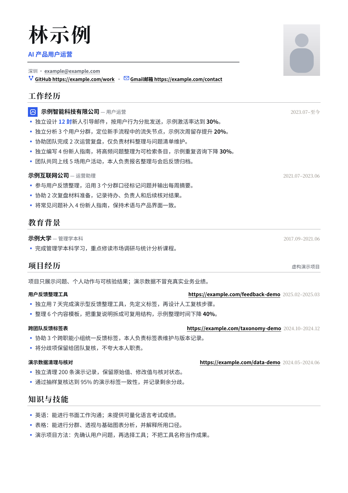

目标漂移
把“多做几个版本”误当质量，忽略用户真正需要的是可投递、可答辩的最终稿。
简历质量不来自模板数量，而来自真实证据、清楚归属、克制表达和可复核的最终文件。v3.2.0 在稳定 Word 生产链上增加结构套话审查与改前改后事实对账，让表达更自然，也不把事实改丢。

11 月 20—24 日的 Bug、返工、回滚和重复修改被归并为八类共同根因。v3.2.0 新增“规则堆积替代真实任务学习”：不能把去 AI 味做成更多禁令，也不能为了追求零命中牺牲事实与个人表达。
把“多做几个版本”误当质量，忽略用户真正需要的是可投递、可答辩的最终稿。
正文、样式和验收各自维护，修改后彼此漂移。现在只保留一份 YAML 和一个 DOCX 排版源。
把未反对当确认、把协助写成主导。现在事实状态和归属都是显式数据。
字体、照片和间距连续试错，却不回到生产约束。现在固定参数由封板 XML 与真实 Word 共同校准。
生成成功、文字一致或截图存在都不等于成品正确。现在检查真实文件、真实链接和逐页像素。
已确认事实在新对话里被重新怀疑。派生版本保留状态、归属和来源哈希。
把丰富样例里的主页、GitHub、项目和照片当成默认目录。现在同时测试功能丰富与极简候选人。
禁令只增不删，最后换一套模板腔。现在用真实反例、可选表达样本和同题对照持续删减规则。
借鉴规格驱动重建、最小上下文、影子运行和独立端到端验收：先蒸馏已经认可的行为，再用真实产物证明新路线成立。历史版本保留在 Git，活跃分支只有一条生产链。
来源、状态、归属、答辩说明
已有证据与真实缺口分开
套话定位、事实对账与语义复核
同一 DOCX、同一 Word 实例
全文、链接、视觉与编辑撤销
| 事实 ID | 归属 | 状态 | 正文如何使用 |
|---|---|---|---|
| F001 | personal | confirmed | 保留个人动作与数字口径，bullet 必须引用 F001。 |
| F003 | assisted | authorized | 只能写协助与本人负责的部分，不能升级成独立主导。 |
| F006 | demo | confirmed | 必须保留演示例证口径，不冒充真实客户业务结果。 |
| JD gap | 无证据 | 明确缺口 | 提示真实差距，不编造经历，也不生成虚假匹配分。 |
完整研读指定文章正文与 48 张配图，并审查 Humanizer 4.0.0 后，保留“真实样本、逐句反馈、同题对照、持续删减规则”的方法，不照搬英文禁令。简历里的自然，是具体、可信、可答辩，不是刻意口语化。
定位铺垫、夸大、无名权威、抽象三连和连接号滥用。弱模式只 WARN；对话残留、文档自叙和猜测事实才强阻断。
纯润色只允许 bullet.text 改变，数字不得增删。字段和数字通过不代表语义等价，名称、动作、范围与因果仍由人复核。
有真实表达样本时提炼 KEEP／CHANGE／ADD；十篇不是启动门槛。同题对照不冒充人工盲评，不输出 AI 概率或人味分数。
个人主页、GitHub、Vibe Coding／其他项目、照片都不是必配项。只有能服务目标岗位的真实证据才进入简历；没有就省略，不生成空白链接行、空章节或占位项目。
用于姓名、模块标题与日期。姓名 34pt，模块标题 13pt。
用于条目、bullet、联系方式和链接。正文 9.5pt，固定行距 13.8pt。
测试不只统计数量。每一族都对应历史上真实发生过的失败模式，避免“这次修好、下次换种方式复发”。
主题残留、样式覆盖、网页与代码不一致。
无来源数字、暂定事实、归属升级、派生降级。
文本、链接、字体、照片和 Word 可编辑性。
漏报、误报、假比较、未做冒充通过。
来源变化、状态丢失、公开隐私和越界修改。
套话误伤、数字漂移、机械改写和语义假通过。
公开样例使用完全虚构的人物、公司、数字与链接。核心与严格项按真实 DOCX、Word PDF、编辑撤销和重复导出结果判定；写作正反例与事实对账单独验证，建议项不被藏起来。
2 项建议 WARN：JD 真实缺口、PDF 内照片建议像素
建议 WARN 不等于核心失败，也不被改写成全绿。
最强反对者不会因为测试通过就停止质疑。以下情况不能被单一固定标准掩盖，也不能靠换一条排版链或更多写作禁令规避。
对视觉作品集、设计岗位或企业强制模板确实可能不合适。本 Skill 面向通用中文求职简历，不声称覆盖所有展示场景。
不等于。脚本只能证明引用、数字和归属一致；事实真实性仍需要用户确认与可答辩材料。
可以生成 DOCX 和文字稿，但 PDF 双导出与 Word 编辑撤销必须保持 NOT_RUN，不能宣称完整封板。
不是。页数由经历与目标决定；不为凑页数删字、缩字号，也不为填满页面增加无效内容。
不能。这里不做 ATS 打分，不承诺面试、录用、薪资或 Offer 概率。
仍可生成完整简历。它们只在能增加岗位判断信息时保留；若 JD 明确要求作品集，才披露对应真实缺口。
不是。真实对比、专业术语和用户确认原话可以保留；机械替换可能制造另一套模板腔，命中数不是写作配额。
不能。“独立”改成“协助”可以保留所有数字，却改变归属。机械对账后仍必须人工复核语义。